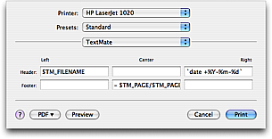

To the amusement of some and the frustration of others, TextMate currently features only limited printing capabilities.
That means you can only use the document font with no syntax highlighting and no options except the standard printing options plus header and footer fields as shown below.

The header and footer fields support the normal variables, interpolated code using backticks and in addition has access to these two variables:
TM_PAGE — the current page being printed (this is the actual page number as if all pages in the document are printed, so even if you only print page 3, this variable will be 3 and not 1).
TM_PAGES — total number of pages in the document.
There are plans to improve the printing capabilities, but until then, there is also a command in the Source bundle (View Source as PDF) which produces a PDF from the current source using enscript and has syntax highlighting enabled for supported languages.